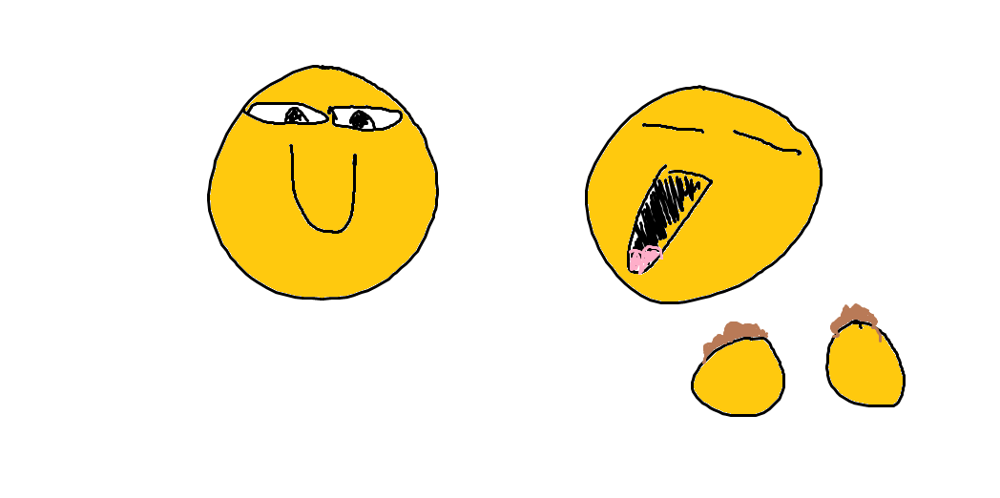

Paint Drawings
These aren't meant to be good or even make much sense on their own. These drawings are made in about 5 minutes each to accompany a strange or funny conversation happening between my friends. I decided to collect and write a little context for each one, mainly to remind my friends of our greatest moments
A little light exercise
Does your body temperature reach critically low levels when you exercise? Well apparently one of my friend's does. It's ok, one of us will always be nearby with a flamethrower in case an emergency rescue is in order.
The correct way to approach a sleeping dog
Everyone has heard the phrase "let sleeping dogs lie", but how do you follow this law of life when said dog is taking up your position on the bed? The easiest and most obvious solution is an orbital drop with a parachute. By landing with your limbs around the dog [careful not to land directly on top of it] you can enjoy a peaceful night's rest while still following the greatest rule of modern society.
Eating Soil

If I'm being perfectly honest I don't really know what's going on here either.
A Good Kick
It's important that everyone has a good kick every now and them to remind themselves of where they are. This compilation of kickers is part of a running joke within our group.